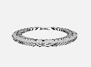

{{project.scenario[0].name}}
Wow, I see there are 20,424,424,011 possible solutions to combine materials and technologies in this scenario.
Don‘t worry. I can help you find the best solution – tailor-made to meet your goals.
You have 1 optimization run free in your trial plan.
Estimated server run time: approx. 48:00 h